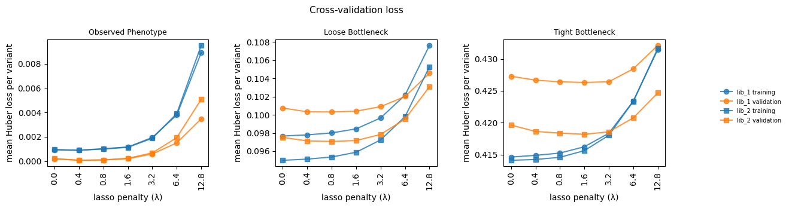

Cross-Validation¶
Evaluate model generalization via 80/20 train/test cross-validation across the fusion-regularization grid.
Outline
Load simulated functional scores and pipeline config
Split data into train (80%) and test (20%) sets, stratifying WT variants
Fit models on training data across the fusionreg grid
Evaluate validation loss on held-out test data
Visualize training vs validation loss across regularization strengths
[1]:
import warnings
warnings.filterwarnings("ignore")
import os
import sys
sys.path.insert(0, "notebooks")
import matplotlib.pyplot as plt
import numpy as np
import pandas as pd
import multidms
from multidms.model_collection import ModelCollection, fit_models
from multidms.utils import explode_params_dict
from _common import load_config, build_fit_params, all_muts_known
[2]:
config_path = "config/config.yaml"
[3]:
# Parameters
config_path = "/fh/fast/matsen_e/shared/multidms/multidms/experiments/simulation/config/config.yaml"
[4]:
config = load_config(config_path)
sim = config["simulation"]
fit_config = sim["fitting"]
seed = config["seed"]
train_frac = config["train_frac"]
output_dir = sim["output_dir"]
lasso_choice = sim["lasso_choice"]
os.makedirs(output_dir, exist_ok=True)
print(f"Output directory: {output_dir}")
Output directory: results
Load functional scores¶
[5]:
func_scores = pd.read_csv(os.path.join(output_dir, "simulated_func_scores.csv"))
func_scores["func_score_type"] = pd.Categorical(
func_scores["func_score_type"],
categories=["observed_phenotype", "loose_bottle", "tight_bottle"],
ordered=True,
)
print(f"Loaded {len(func_scores)} rows")
Loaded 349866 rows
Train/test split¶
Split functional scores into 80% train / 20% test. All wildtype variants are kept in the training set (stratified split).
[6]:
train_datasets = []
test_data = {}
for (library, measurement), fs_df in func_scores.rename(
columns={"homolog": "condition"}
).groupby(["library", "func_score_type"]):
if "enrichment" in str(measurement):
continue
wt_mask = fs_df["aa_substitutions"].fillna("").str.strip() == ""
wt_rows = fs_df[wt_mask]
non_wt_rows = fs_df[~wt_mask].sample(frac=1, random_state=seed)
n_train = int(len(non_wt_rows) * train_frac)
train_split = pd.concat([wt_rows, non_wt_rows.iloc[:n_train]])
test_split = non_wt_rows.iloc[n_train:]
name = f"{library}_{measurement}"
train_split = train_split.copy()
train_split["aa_substitutions"] = train_split[
"aa_substitutions"
].fillna("")
train_datasets.append(
multidms.Data(
train_split,
reference="h1",
alphabet=multidms.AAS_WITHSTOP_WITHGAP,
verbose=False,
name=name,
)
)
test_data[name] = test_split
print(
f"Created {len(train_datasets)} train datasets, "
f"{len(test_data)} test datasets"
)
Created 6 train datasets, 6 test datasets
Fit models on training data¶
[7]:
cv_fitting_params = build_fit_params(fit_config, train_datasets)
# Determine n_processes for parallel fitting
n_models = len(explode_params_dict(cv_fitting_params))
cfg_n_processes = fit_config.get("n_processes")
if cfg_n_processes is None:
n_processes = min(os.cpu_count() // 2, n_models)
else:
n_processes = min(int(cfg_n_processes), n_models)
n_processes = max(n_processes, 1)
print(f"Fitting {n_models} CV models with n_processes={n_processes} (cpus={os.cpu_count()})")
n_fit_cv, n_failed_cv, fit_collection_cv = fit_models(
cv_fitting_params, n_processes=n_processes
)
# Convert dict-valued columns to strings for groupby compatibility
for col in fit_collection_cv.columns:
if fit_collection_cv[col].apply(lambda x: isinstance(x, dict)).any():
fit_collection_cv[col] = fit_collection_cv[col].apply(str)
print(f"CV: fit {n_fit_cv} models, {n_failed_cv} failed")
Fitting 42 CV models with n_processes=16 (cpus=32)
CV: fit 42 models, 0 failed
Evaluate validation loss¶
Filter test variants to exclude those with mutations unseen during training, then compute validation loss via add_eval_loss.
[8]:
mc_cv = ModelCollection(fit_collection_cv)
filtered_test = {}
for name, test_df in test_data.items():
model = (
mc_cv.fit_models.query(f"dataset_name == '{name}'")
.iloc[0]
.model
)
known_muts = set(model.data.mutations)
mask = test_df["aa_substitutions"].apply(
lambda s: all_muts_known(s, known_muts)
)
filtered_test[name] = test_df[mask]
n_dropped = (~mask).sum()
if n_dropped > 0:
print(
f"{name}: dropped {n_dropped}/{len(test_df)} "
"test variants with unseen mutations"
)
mc_cv.add_eval_loss(filtered_test, overwrite=True)
lib_1_observed_phenotype: dropped 2734/11696 test variants with unseen mutations
lib_1_loose_bottle: dropped 2711/11696 test variants with unseen mutations
lib_1_tight_bottle: dropped 2711/11696 test variants with unseen mutations
lib_2_observed_phenotype: dropped 2667/11628 test variants with unseen mutations
lib_2_loose_bottle: dropped 2767/11628 test variants with unseen mutations
lib_2_tight_bottle: dropped 2767/11628 test variants with unseen mutations
Visualize cross-validation loss¶
Training vs validation loss (mean Huber loss per variant) across the fusion-regularization grid, faceted by measurement type.
[9]:
NICE_TITLES = {
"observed_phenotype": "Observed Phenotype",
"loose_bottle": "Loose Bottleneck",
"tight_bottle": "Tight Bottleneck",
}
MT_ORDER = ["observed_phenotype", "loose_bottle", "tight_bottle"]
cv_data = mc_cv.fit_models.copy()
cv_data["library"] = (
cv_data["dataset_name"].str.split("_").str[0:2].str.join("_")
)
cv_data["measurement_type"] = (
cv_data["dataset_name"].str.split("_").str[2:4].str.join("_")
)
cv_data["measurement_type"] = pd.Categorical(
cv_data["measurement_type"],
categories=["observed_phenotype", "loose_bottle", "tight_bottle"],
ordered=True,
)
cv_data = (
cv_data.melt(
id_vars=[
"fusionreg",
"library",
"measurement_type",
"dataset_name",
],
value_vars=["total_loss_training", "total_loss_validation"],
var_name="dataset",
value_name="loss",
)
.assign(
dataset=lambda x: x["dataset"].str.replace("total_loss_", ""),
lib_dataset=lambda x: x["library"] + " " + x["dataset"],
)
)
# Normalize loss by sample count so train/validation are comparable
n_samples = {}
for d in train_datasets:
n_train_variants = sum(
len(d.variants_df.query(f"condition == '{c}'"))
for c in d.conditions
)
n_samples[(d.name, "training")] = n_train_variants
for name, test_df in filtered_test.items():
n_test_variants = sum(
len(test_df.query(f"condition == '{c}'"))
for c in test_df["condition"].unique()
)
n_samples[(name, "validation")] = n_test_variants
cv_data["n_samples"] = cv_data.apply(
lambda row: n_samples.get(
(row["dataset_name"], row["dataset"]), 1
),
axis=1,
)
cv_data["mean_loss"] = cv_data["loss"] / cv_data["n_samples"]
# Convert fusionreg to categorical string for x-axis
cv_data["fusionreg_cat"] = cv_data["fusionreg"].astype(str)
# Plot
mt_vals = [
mt for mt in MT_ORDER
if mt in cv_data["measurement_type"].dropna().values
]
fig, axes = plt.subplots(
1, len(mt_vals), figsize=(12, 3.5), sharey=False, squeeze=False
)
for ax, mt in zip(axes[0], mt_vals):
sub = cv_data[cv_data["measurement_type"] == mt]
for (ld, ds, lib), grp in sub.groupby(
["lib_dataset", "dataset", "library"]
):
grp = grp.sort_values("fusionreg")
marker = "o" if "lib_1" in lib else "s"
color = "tab:blue" if ds == "training" else "tab:orange"
ax.plot(
grp["fusionreg_cat"],
grp["mean_loss"],
marker=marker,
color=color,
label=ld,
alpha=0.8,
)
ax.set_title(NICE_TITLES.get(mt, mt), fontsize=9)
ax.set_xlabel("lasso penalty (\u03bb)")
ax.set_ylabel("mean Huber loss per variant")
ax.tick_params(axis="x", rotation=90)
# Consolidated legend outside figure
for ax in axes[0]:
leg = ax.get_legend()
if leg:
leg.remove()
handles, labels = axes[0][0].get_legend_handles_labels()
fig.legend(
handles, labels, loc="center left", bbox_to_anchor=(1.0, 0.5),
frameon=False, fontsize=7,
)
fig.suptitle("Cross-validation loss", fontsize=11)
fig.tight_layout(w_pad=3)
fig.subplots_adjust(right=0.93)
plt.show()

Save results¶
[10]:
cv_data.to_csv(
os.path.join(output_dir, "cross_validation_loss.csv"), index=False
)
print(f"Saved cross_validation_loss.csv ({len(cv_data)} rows)")
Saved cross_validation_loss.csv (84 rows)